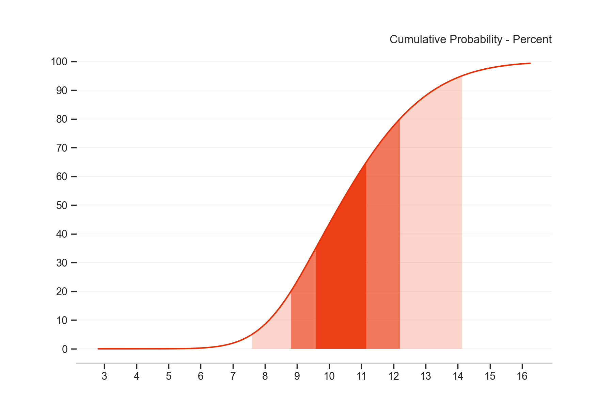
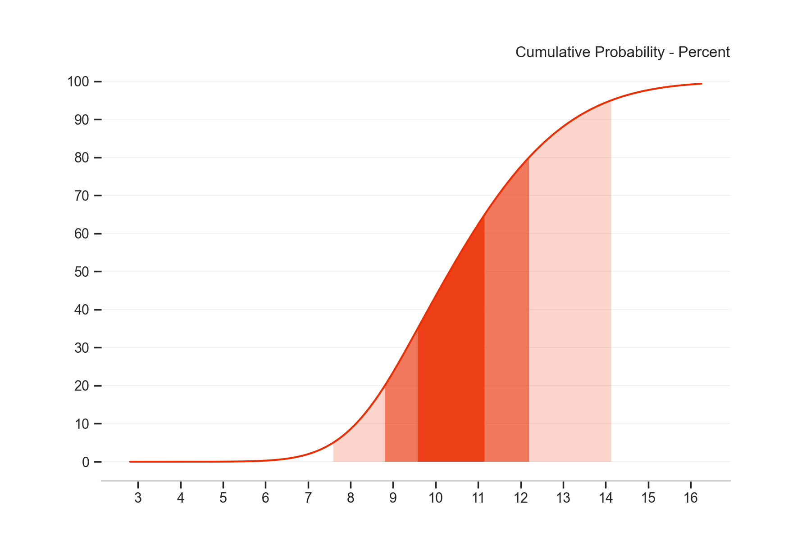

fanchart
A Python library which provides functionality to create fancharts.
By D. Santiago in Python
January 5, 2020
Overview
The term fanchart was coined by the Bank of England in 1996. Since then, central banks around the world have used these charts to illustrate its forecasts for inflation, GDP, and other economy measures.
The BoE introduced the fan charts aiming to communicate a more accurate representation of their forecast for medium term inflation. In particular, the charts have two key objectives:
- To convey the uncertainty in their forecasts. This is, to focus attention on the forecast distribution, rather than only on small changes to the central projection.
- To promote discussion of the risks to the economic outlook, and thus contribute to a wider debate about economic policy. Fan charts help to make it clear that monetary policy is about making decisions instead of knowing the exact rate of inflation in two years time.
This library provides two main functions:
- The fan function illustrates the distribution of all the forecasts available; and it has the option to display the historical values for reference.

- The fan_single function illustrates the probability density function (pdf) or the cumulative density function (cdf) of one forecast distribution
 
